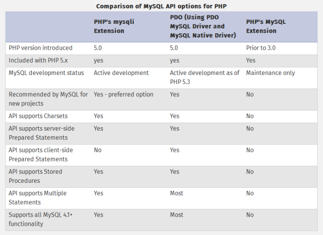

Untuk dapat menggunakan dan mengakses database MySQL, PHP menyediakan 3 cara koneksi: menggunakan PDO (PHP Data Objects), mysqli extension dan mysql extension. Dalam tutorial belajar PHP kali ini kita akan membahas keunggulan masing-masing, dan perbedaan ketiganya.
PHP merupakan bahasa pemograman yang selalu di update dan berkembang mengikuti teknologi terbaru. Saat ini, Pemrograman Berorientasi Objek (Object Oriented Programming) merupakan trend pemrograman PHP, dan hal ini juga mempengaruhi cara mengakses database MySQL dari PHP.
PHP memiliki 3 cara pengaksesan MySQL, yakni melalui PDO (PHP Data Objects), mysqli extension dan mysql extension. PDO menggunakan pemrograman objek, mysqli extension tersedia dalam bentuk objek dan prosedural (diakses melalui fungsi-fungsi) sedangkan mysql extension sepenuhnya menggunakan pemograman prosedural.
Mari kita bahas pengertian dan perbedaan ketiga metode ini:
Saat pertama kali mempelajari PHP MySQL sekitar tahun 2008 (atau jika anda pernah mempelajari PHP-MySQL beberapa tahun yang lalu), untuk mengakses MySQL dari PHP, kita menggunakan fungsi-fungsi seperti mysql_connect(), mysql_query(), dan mysql_fetch_array(). Fungsi-fungsi ini tergabung ke dalam mysql extension (saat itu PDO dan mysqli extension masih jarang digunakan)
Namun sekarang (tepatnya mulai PHP versi 5.5.0) PHP memutuskan untuk membuat mysql extension berstatus deprecated. Yang artinya pengaksesan database MySQL menggunakan fungsi mysql extension sudah tidak disarankan lagi. Programmer PHP diharapkan pindah ke mysqli extension atau PDO yang berbasis objek.
Alasannya, MySQL versi terbaru memiliki fitur-fitur yang semakin lengkap dan kompleks, sehingga PHP memutuskan untuk membuat fungsi extension baru agar programmer PHP bisa menggunakan fitur-fitur ini.
Sebagai pengganti mysql extension, PHP menyediakan mysqli extension (mysqli merupakan singkatan dari MySQL Improved). Mysqli extension ini pada dasarnya adalah perbaikan dari mysql extension dan dikembangkan untuk mendukung fitur-fitur terbaru untuk MySQL 4.1 keatas.
Hampir semua fungsi yang ada pada mysql extension juga tersedia pada mysqli. Syntax (aturan penulisan) mysqli sangat mirip dengan mysql extension. Sehingga jika anda telah lama menggunakan mysql extension, akan sangat mudah untuk beralih menggunakan mysqli extension.
Selain menggunakan mysql maupun mysqli extension, cara ketiga untuk pengaksesan database MySQL dari PHP adalah dengan menggunakan PHP Data Objects (atau sering disingkat dengan PDO).
PDO (PHP Data Objects), adalah extension atau penambahan fitur dalam PHP yang dirancang sebagai interface universal untuk pengaksesan berbagai jenis database (tidak hanya MySQL). Contohnya, jika kita menggunakan PDO dalam menulis kode pemograman, lalu suatu saat website kita bertukar database dari MySQL ke Oracle, maka kita tidak perlu mengubah semua kode program, cukup mengubah cara pemanggilan PDO diawal program saja.
Dari ketiga cara koneksi PHP dengan MySQL ini, metode yang disarankan adalah menggunakan mysqli atau PDO.
Sebagai perbandingan fitur antara ketiga jenis koneksi PHP-MySQL ini, berikut adalah tabel perbandingan antara mysqli, PDO dan mysql extension yang bersumber dari manual resmi PHP:

Untuk mengetahui secara sekilas perbedaan cara pengaksesan database MySQL menggunakan mysql extension, mysqli extension, dan PDO, berikut contoh kode PHPnya:
<?php// cara mengakses MySQL menggunakan mysql extension:$link = mysql_connect("localhost", "root", "qwerty");mysql_select_db("universitas");$result = mysql_query("SELECT * FROM mahasiswa");$row = mysql_fetch_assoc($result); // cara mengakses MySQL menggunakan mysqli extension:$mysqli = new mysqli("localhost", "root", "qwerty", "universitas");$result = $mysqli->query("SELECT * FROM mahasiswa");$row = $result->fetch_assoc(); // cara mengakses MySQL menggunakan PDO:$pdo = new PDO('mysql:host=localhost;dbname=universitas', 'root', 'qwerty');$statement = $pdo->query("SELECT * FROM mahasiswa");$row = $statement->fetch(PDO::FETCH_ASSOC);?> |
Dalam contoh diatas, dianggap bahwa user MySQL adalah root, password ’qwerty’, dan nama database ’universitas’.
Anda tidak perlu memahami kode program diatas, karena kita akan membahasnya dengan lengkap dalam tutorial belajar PHP MySQL di duniailkom ini.
Untuk tahap pertama, saya akan menggunakan metode mysql extension yang berbasis fungsi terlebih dahulu. Walaupun metode ini tidak disarankan lagi, namun metode inilah yang paling mudah dipelajari dan telah dikenal luas.
Setelah selesai membahas mysql extension, selanjutnya kita akan beralih ke mysqli extension yang bisa ditulis dengan procedural style (menggunakan fungsi-fungsi) ataupun dengan object style. Terakhir, kita akan membahas cara membuat koneksi PHP MySQL menggunakan PDO. Cara pengaksesan MySQL dengan PDO yang berbasis objek akan lebih mudah dipahami jika anda telah mempelajari pemrograman berbasis objek.
Dalam tutorial selanjutnya, kita akan membahas pengertian extension PHP, dan cara pengaturan PHP (setingan PHP) agar kita dapat menggunakan mysql extension, dalam tutorial Pengertian extension PHP dan cara setting mysql extension.
Sumber : http://www.duniailkom.com/tutorial-php-mysql-jenis-koneksi-php-mysql-pdo-mysqli-dan-mysql-extension/